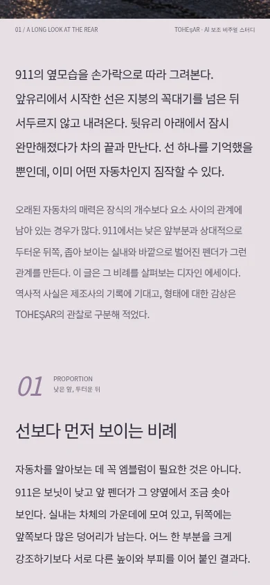
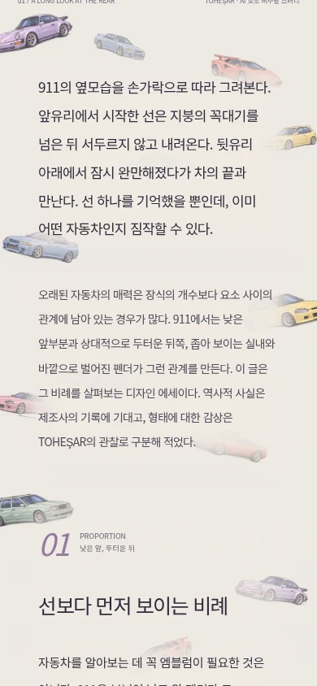
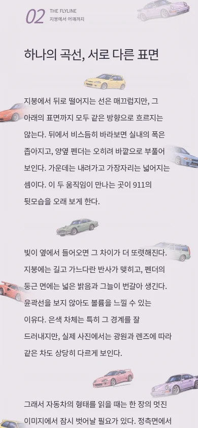
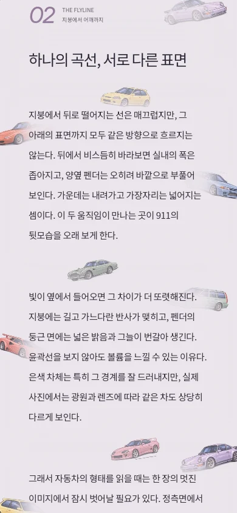
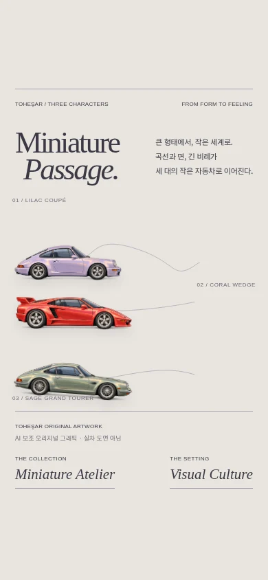
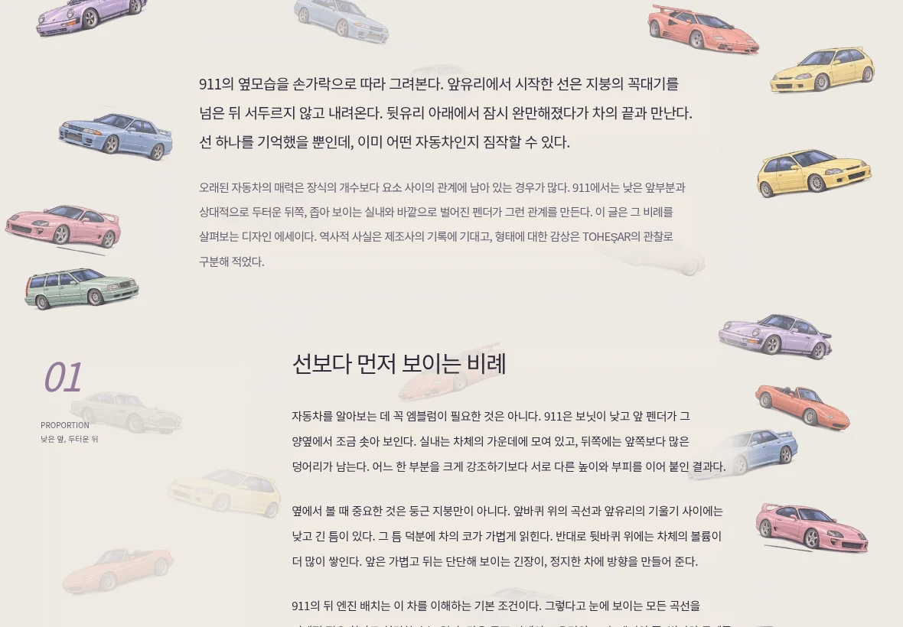

08 / Eight little characters.
새로 제작한 AI 보조 자동차 일러스트. 기존 006 미니카와 구분되는 새 컬렉션입니다. 특정 모델의 정확한 도해나 제조사 공식 상품이 아닙니다.


작고 유려한 자동차 여러 대가, 실제 한국어 기사 뒤에 흩어져 있다.
동일한 911 도입 문단, 동일한 390 × 844 화면. 왼쪽은 변경하지 않은 010 최종 HEAD의 실제 렌더입니다.


정지 화면에서도 성립하는 구도. 자동차는 장식 레이어에 있고, 본문은 그 위에서 읽힙니다. 두 엔진의 렌더를 함께 공개합니다.


낮은 밀도는 배경의 성격이 약하고, 풍부한 밀도는 차량이 먼저 읽힙니다. 본문과 작은 형태의 균형이 가장 좋은 중간 밀도를 채택했습니다.
같은 실제 문단을 190px씩 스크롤한 세 상태입니다. 움직임은 배경의 일부이며, 역스크롤하면 같은 위치로 돌아갑니다. 모션 감소·JavaScript 없는 환경에서는 정적인 벽지가 유지됩니다.
010은 세 자동차를 위한 독립 전시판입니다. 011은 실제 에세이의 문단 뒤에 있는 배경입니다. Passage 소스는 보존하고, Atelier의 접힌 아카이브에서만 기본 접근하도록 옮겼습니다.

iPad 가로 1180 × 820의 실제 911 기사 렌더. 아래 화면 크기 링크에서 원본을 확인할 수 있습니다.

새로 제작한 AI 보조 자동차 일러스트. 기존 006 미니카와 구분되는 새 컬렉션입니다. 특정 모델의 정확한 도해나 제조사 공식 상품이 아닙니다.